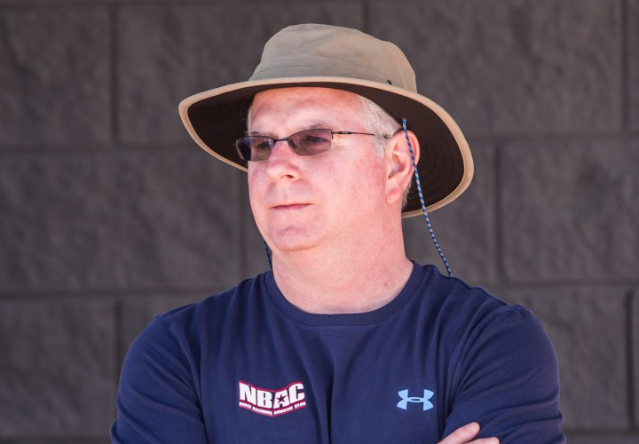

Bob Bowman
It was also during his work at NBAC that Bowman began coaching 23-time Olympic gold medalist Michael Phelps. Under Bowman's tutelage at the North Baltimore Aquatic club, Phelps won five World Championship gold medals and was named the American Swimmer of the Year from 2001 to 2004.While at Michigan, Bowman worked closely with Greg Harden, then the sport administrator for swimming. Harden spoke often with both Bowman and Phelps during their time in Ann Arbor leading up to the 2008 Olympics, and he often helped one communicate better with the other. Bowman gives Harden some of the credit for all the success Team USA had in the pool in Beijing. Bowman even says Harden was one of the major reasons he came to Michigan in the first place. Bowman on Harden: “He’s a miracle worker. He made me a better coach, and a better person.Bowman was named as an assistant coach on the 2004 U.S. Olympic Team, serving as the primary coach for Phelps. At the 2004 Games, Bowman helped coach Phelps to eight medals, including six gold medals and two bronze. Four years later, at the 2008 Beijing Olympics, he coached Phelps to achieve eight Olympic gold medals, Under his supervision, BSL improved to a top five program regionally after finishing out of the top 20 the previous 10 years.